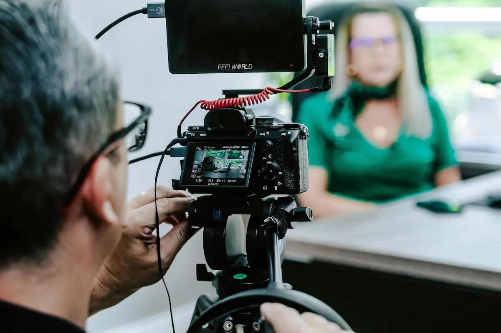

01 / BROADCASTING
Inside the Studio

Where ideas find their voice. Explore studio sessions, podcasting, and the craft of connecting with an audience through sound.
Broadcasting, podcasting, and live experiences — Parrot brings stories to life, sparks conversations, and connects audiences through the power of entertainment.
Explore the media Booking inquiries
A look into Parrot's world of broadcasting, live event hosting, and on-camera conversations. From the studio to the stage, explore the work, stories, and experiences that define its presence in media.
01 / BROADCASTING
Where ideas find their voice. Explore studio sessions, podcasting, and the craft of connecting with an audience through sound.
02 / Live Events

Energy, timing, and connection. Discover the world of live events and the art of keeping audiences engaged in the moment.
03 / Interviews

Thoughtful questions. Fresh perspectives. Authentic dialogue. Explore the conversations that bring people, ideas, and stories together.
Connecting people through stories, conversations, and entertainment.
Parrot Media is a Kenyan media brand focused on broadcasting, podcasting, and live event hosting. Through engaging conversations and creative presentation, the brand explores stories that inform, entertain, and connect audiences.
From studio productions to live experiences, Parrot Media brings together storytelling, communication, and entertainment to create content that captures attention and encourages meaningful connections.

THE JOURNEY SO FAR
2020
An early interest in broadcasting and storytelling sets the foundation for a career in media.
2024
Podcasting opens new opportunities for longer conversations, interviews, and audience engagement.
2026
Broadcasting and presentation skills extend into live events and audience experiences.
LET'S WORK TOGETHER
Planning a broadcast, podcast, live event, or brand partnership? Tell Parrot Media what you have in mind and start a conversation.